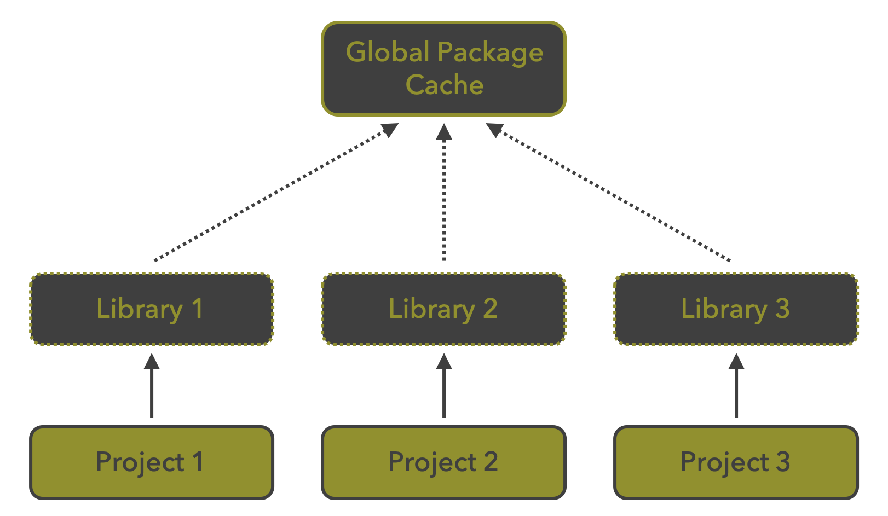

Reprodutibilidade em R e GitHub
NT265/NE441 - Análise de dados e apresentação de gráficos usando a linguagem R
26 de novembro de 2025
Repositório do GitHub
https://github.com/mauriciovancine/workshop-quarto-git-github
Organização do projeto
Diretórios e nomes de arquivos

Controle de versão
Manejar projetos compartilhados

Controle de versão
Cada vez mais necessário em colaborações


git e GitHub
git
- Software (app) que faz o controle de versão
- Maneja os repositórios locais (computador) e repositório remotos (e.g. GitHub)

git e GitHub
git
- Criado por Linus Torvalds em 2005 para substituir o BitKeeper no gerenciamento do Kernel Linux
- Software livre, distribuído sob a licença GNU GPL v.2

git e GitHub
GitHub
- Repositórios remotos
- Plataformas de hospedagem e controle de versão de arquivos/códigos


git e GitHub
GitHub
- Plataforma de hospedagem de código e arquivos com controle de versão usando o git
- Desenvolvido em 2008 usando Ruby on Rails por ‘computeiros’ de São Francisco
- Em 2018, a Microsoft anunciou a compra da plataforma por US$ 7,5 bilhões
Detalhes do GitHub
Perfil

Detalhes do GitHub
Repositório

Criando um repositório
Criar repositório: Perfil > Repositories > New

Controle de versão na prática
Duas formas de trabalhar com o git e GitHub
- Iniciando um projeto em nosso computador - localmente (git)
- Iniciando por um repositório remoto - remotamente (GitHub)


Controle de versão na prática

Controle de versão na prática

Controle de versão na prática


Iniciando remotamente
Fork: cópia de um repositório para o seu repositório (GitHub)

Iniciando remotamente
Clonar: download de um repositório remoto (e.g. GitHub) para o seu repositório local (computador)

Iniciando remotamente
- Usando o terminal para clonar pelo SSH (configurado anteriormente)

Iniciando remotamente
- Usando o Projeto do RStudio para clonar pelo SSH (configurado anteriormente)

Iniciando remotamente
Criar um Projeto R com controle de versão
File > New Project > Version Control

Versionamento


Versionamento
Comandos git para o fluxo de trabalho dos repositórios


Versionamento
Fluxo do versionamento

Versionamento
Fluxo do versionamento
- Diretório de trabalho (working directory): pasta com os arquivos [working tree] (.git)
- Preparação (staging area): arquivos adicionados para serem versionados [Index] (.git)
- Repositório (repository): versão consolidada dos arquivos [HEAD] (.git)

Versionamento
ATENÇÃO!
- Mensagens de commit são fundamentais
- Devem ser curtas e indicar as mudanças feitas nos arquivos/repositório

Versionamento


Ramificações
- Branch (ou ramo) é uma linha paralela de desenvolvimento


Remoto
git push: envia suas alterações (commits) feitas localmente para o repositório remoto (GitHub)

Remoto
git pull: busca atualizações do repositório remoto e as traz para o repositório local, alterando a branch atual

Pull request
Pull Request: solicita que o repositório remoto original (GitHub) aceite (pull - ‘puxe’) as alterações realizadas do fork

Resumindo
Completo

Agradecimento mais que justo
Agradecimento à Beatriz Milz pelas figuras surrupiadas (eu pedi…)

Interface Gráfica do RStudio
Git Panel
- RStudio tem um cliente Git na aba “Git”
- Esse painel aparece em projetos que estejam versionados com git

Interface Gráfica do RStudio
Git Panel - Diff - History: Histórico de mudanças

Interface Gráfica do RStudio
Git pane - Staged

Interface Gráfica do RStudio
Git pane - Staged e File status

Interface Gráfica do RStudio
Git pane - Commit


renv
Gerenciamento de pacotes
- Cria um ambiente reprodutível (reproducible environment) e isolado de pacotes para cada projeto
- Armazena versões dos pacotes em
renv.lock
renv
Por que usar renv?
- Evita conflitos de versão funções mudam entre versões
- Reproduz resultados mesmo após atualizações do R
- Compartilha ambientes com colegas ou colaboradores
- Documenta automaticamente os pacotes usados
renv
Workflow

renv
Sistema de bibliotecas

R behaviour
renvDocumentação no R

Documentação no R
Documentação de pesquisa
Registro sistemático, claro e organizado das etapas de um projeto científico, desde o planejamento até a publicação
Garante que o trabalho possa ser entendido, verificado e reproduzido por outros pesquisadores

Documentação no R
Programação Literária
Programação literária é um paradigma de programação introduzido em 1984 por Donald Knuth (LaTeX), no qual um programa de computador é apresentado como uma explicação de como ele funciona em uma linguagem natural (e.g. inglês), intercalado (embutido) com trechos de macros e código-fonte tradicional, a partir dos quais um código-fonte compilável pode ser gerado.
Conceito inicial

Implementação moderna com Quarto

Quarto
Descrição
- Fornece uma estrutura para ciência de dados, combinando código, resultados e texto
- Documentos são totalmente reproduzíveis, automatizando a inclusão das últimas versões dos resultados e análises
Quartoé a nova geração do R Markdown


Quarto
Multiplas saídas
- Múltiplos formatos de saída: páginas web, PDFs, Word, sites, livros e mais

Quarto
Funcionamento

Quarto
Funcionamento

Quarto
Projeto Quarto

Quarto
Arquivo Quarto (.qmd)

Quarto
Arquivo Quarto (.qmd)

Quarto
Arquivo Quarto (.qmd) - Visual editor

Quarto
Arquivo Quarto (.qmd) - Renderizar


Quarto
Arquivo Quarto (.qmd) - Anatomia

- YAML (Yet Another Markup Language): cabeçalho (início do
.qmd) onde são inseridas as configurações do documento (formatação, data, título, autor etc.), delimitado por---e--- - Texto: usa markdown como sua sintaxe de documento principal
- Códigos (chunks): blocos de códigos onde se insere códigos em R, Python, Julia e outros, delimitado por
```{r}e```
Quarto
Arquivo Quarto (.qmd) - Anatomia
---
title: "Hello, Penguins"
format: html
execute:
echo: false
---
## Meet the penguins
The __penguins__ data contains size measurements for
penguins from three islands in the Palmer Archipelago,
Antarctica.
The _three_ species of penguins have quite distinct
distributions of physical dimensions (@fig-penguins).
# ```{r}
#| label: fig-penguins
#| fig-cap: "Dimensions of penguins across three species."
#| warning: false
library(tidyverse, quietly = TRUE)
library(palmerpenguins)
penguins |>
ggplot(aes(x = flipper_length_mm, y = bill_length_mm)) +
geom_point(aes(color = species)) +
scale_color_manual(
values = c("darkorange", "purple", "cyan4")) +
theme_minimal()
# ```Quarto
Arquivo Quarto (.qmd) - Anatomia
---
title: "Hello, Penguins"
format: html
execute:
echo: false
---
## Meet the penguins
The __penguins__ data contains size measurements for
penguins from three islands in the Palmer Archipelago,
Antarctica.
The _three_ species of penguins have quite distinct
distributions of physical dimensions (@fig-penguins).
#| label: fig-penguins
#| fig-cap: "Dimensions of penguins across three species."
#| warning: false
library(tidyverse, quietly = TRUE)
library(palmerpenguins)
penguins |>
ggplot(aes(x = flipper_length_mm, y = bill_length_mm)) +
geom_point(aes(color = species)) +
scale_color_manual(
values = c("darkorange", "purple", "cyan4")) +
theme_minimal()
Quarto
Arquivo Quarto (.qmd) - Texto - markdown
Markdowné um formato de texto simples projetado para ser fácil de escrever e, ainda mais importante, fácil de lerQuartoé baseado noPandoce usa sua variação demarkdowncomo sintaxe de documento

Quarto
Arquivo Quarto (.qmd) - Código - chunk
The _three_ species of penguins have quite distinct
distributions of physical dimensions (@fig-penguins).
````{r}
#| label: fig-penguins
#| fig-cap: "Dimensions of penguins across three species."
#| warning: false
library(tidyverse, quietly = TRUE)
library(palmerpenguins)
penguins |>
ggplot(aes(x = flipper_length_mm, y = bill_length_mm)) +
geom_point(aes(color = species)) +
scale_color_manual(
values = c("darkorange", "purple", "cyan4")) +
theme_minimal()
````
Quarto
Arquivo Quarto (.qmd) - Código - chunk

Quarto
Galeria

Shiny
Descrição
- Framework do R para criar aplicações web interativas
- Permite construir dashboards, painéis de visualização, e ferramentas analíticas
- Totalmente integrado ao R (sem necessidade de HTML/CSS/JS)

Muito obrigado!
Agradecimentos: